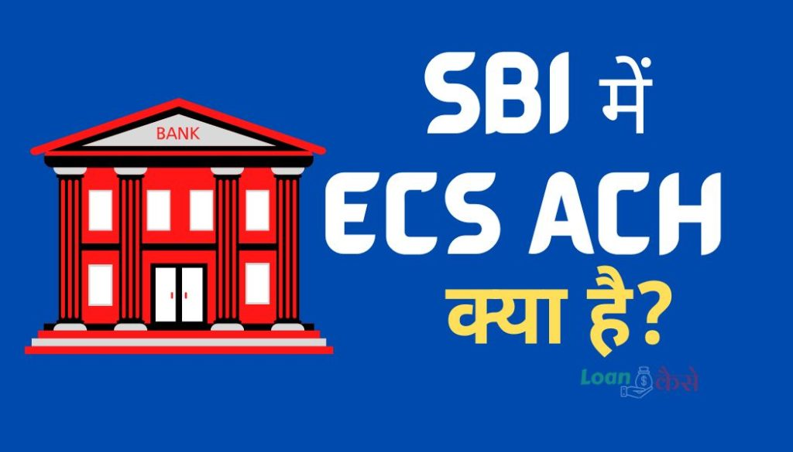

परिचय (Introduction)
यदि आप SBI (State Bank of India) के ग्राहक हैं और ईसीएस (ECS) या एसीएच (ACH) से संबंधित हैं, तो आपने शायद ECS ACH Return Charges के बारे में सुना होगा। इस Post में,हम इस विषय पर विस्तृत जानकारी देंगे और आपको SBI में ECS ACH Return Charges के बारे में सम्पूर्ण जानकारी प्राप्त करने में मदद करेंगे।
ECS ACH क्या है?
ECS ACH या “Electronic Clearing Service – Automated Clearing House” एक financial system है जिसका उपयोग भारतीय Bank द्वारा Bank खाताधारकों के बीच financial transaction के लिए किया जाता है। इस System के माध्यम से, निर्दिष्ट समयांतराल में निर्दिष्ट राशि की भुगतानें एक Bank खाते से दूसरे Bank खाते में Automatically Transfer की जाती हैं।
उदाहरण के लिए :-
किसी रमेश नाम के वक़्ति ने किसी Loan देने वाले Bajaj company से लोन लिया। लोन देने वाले Company का खाता HDFC Bank में है और रमेश का खाता SBI Bank में है .
मान लेते हैं कि उस वक़्ति को प्रतेक महीने 10,000 रुपए EMI Bajaj कंपनी को देना है .ऐसे में रमेश को प्रतेक महीने HDFC Bank या अपने SBI Bank में जाकर Bajaj Company के खाते में 10,000 रुपए ट्रांसफ़र करने होंगे ।
अगर रमेश हर महीने Bank नहीं जाना चाहता है तो उसे अपने SBI के खाते में ECS ACH या “Electronic Clearing Service – Automated Clearing House Service स्टार्ट करवाना होगा ,ECS ACH Service Activate हो जाने के बाद हर महीने 10,000 रुपए बताये गये तारीख़ और समय पर रमेश के SBI खाते से कटकर अपनेआप Bajaj के HDFC खाते में चला जाएगा ।
SBI (State Bank of India) में ECS ACH Return Charges क्या हैं?
ECS ACH Return Charges, एक Bank खाते से होने वाले ECS या ACH ट्रांजैक्शन(Transaction) की सफलता में विफलता के मामले में लागू होने वाले Charges होते हैं। जब किसी वजह से ECS या ACH ट्रांजैक्शन(Transaction) विफल हो जाती है, तो Bank ECS ACH Return Charges का एक निश्चित Amount काटता है। यह Amount विफलता के कारण, जैसे अपर्याप्त धन,खाते में पर्याप्त धन की कमी,खाते बंद होना, गलत खाता नंबर आदि,पर लागू की जाती है
{kind=link}

- SBI Credit Card band kaise kare? ऐसे करे अपना credit कार्ड बंद.
- Credit Card के फ़ायदे और नुक़सान।
- Self Cheque कैसे भरते हैं (How to Fill-up Self Cheque In Hindi)?
- Credit Card Se Cash कैसे निकालें?
SBI में ECS ACH Return Charges के प्रकार
SBI में ECS ACH Return Charges के कई प्रकार होते हैं। इनमे से कुछ महत्वपूर्ण इस प्रकार है :-
1. ड्रॉ स्लिप रिटर्न चार्ज (Cheque Return Charges)
यदि किसी ग्राहक के खाते में पर्याप्त धनराशि न होने के कारण ड्रॉ स्लिप रिटर्न होता है, तो SBI उसे ड्रॉ स्लिप रिटर्न चार्ज लगा सकता है। यह चार्ज ग्राहक को Bank द्वारा लेन-देन की सुविधा और सुरक्षा को सुनिश्चित करने के लिए लगाया जाता है।
2. पेपर रिटर्न चार्ज (Paper Return Charges)
अगर किसी कारण वस आपके खाते के लेनदेन से संबंधित कोई Paper रिटर्न कर दिया जाता है तो इसके बदले Bank आपसे पेपर रिटर्न चार्ज लेगी यह आपके खाते से काटा जाता है।
3. वसूली असफल चार्ज (Collection Unsuccessful Charges)
वसूली असफल चार्ज उन ग्राहकों के लिए लगाया जाता है जिनके Bank खाते से पेमेंट वसूली नहीं जा सकती है। यह चार्ज उस समय लगाया जाता है जब किसी ग्राहक के खाते में पर्याप्त धनराशि न होने के कारण पेमेंट असफल हो जाती है।
ECS ACH Return Charges कितने देने होते हैं?
SBI में ECS ACH Return Charges विभिन्न प्रकार की लेनदेन के लिए अलग-अलग हो सकते हैं। यह Charges लेने का तरीका Bank द्वारा निर्धारित किया जाता है और यह लेनदेन के प्रकार और उसके परिणामस्वरूप होने वाले Charges पर आधारित होता है। इसलिए, आपको वित्तीय लेनदेन करने से पहले SBI Bank की वेबसाइट या नजदीकी शाखा से संपर्क करके वर्तमान ECS ACH Return Charges की जानकारी प्राप्त करनी चाहिए।
SBI में ECS ACH Return Charges से बचने के लिए उपाय:-
अगर आपको ECS ACH Return Charges से बचना है, तो आपको कुछ महत्वपूर्ण बातों का ध्यान रखना चाहिए। यहां हम आपको कुछ उपाय बता रहे हैं जिनकी मदद से आप इन Chargesसे बच सकते हैं:-
- खाते में पर्याप्त धन रखें: ECS या ACH ट्रांजैक्शन(Transaction) के लिए खाते में पर्याप्त धन रखने का सुनिश्चित करें। यदि आपके खाते में पर्याप्त धन नहीं होगा, तो ट्रांजैक्शन(Transaction) विफल हो जाएगी और ECS ACH Return Charges लागू होंगे।
- सही खाता नंबर और विवरण बैंक को दे : ECS या ACH ट्रांजैक्शन(Transaction) के दौरान सही खाता नंबर, विवरण और अन्य आवश्यक जानकारी प्रदान करना महत्वपूर्ण है। गलत खाता नंबर देने से ट्रांजैक्शन(Transaction) विफल हो सकती है और आपको ECS ACH Return Charges का सामना करना पड़ सकता है।
- नियमित रूप से खाते की सत्यापन करें: अपने Bank खाते की सत्यापन को नियमित रूप से करें आपका खाता नियमित रूप से चालू है या नहीं ये चेक करते रहे । यदि आपका खाता बंद हो जाता है, तो ट्रांजैक्शन(Transaction) विफल हो सकती है और आपको ECS ACH Return Charges देने पड़ सकते हैं।
- ध्यानपूर्वक नियमों का पालन करें: आपको अपने Bank के नियम और शर्तों का सख्ती से पालन करना चाहिए। आपको अपने भुगतान की समय सीमा, नियमितता और अन्य जरूरी विवरणों को समझना चाहिए ताकि आप इन चार्जेज से बच सकें।
- अपने Bank के साथ संपर्क करें: यदि आपको अपने भुगतान को समय पर करने में कोई समस्या होती है, तो आपको अपने Bank के Contact Center से संपर्क करें ।आप अपनी समस्या को समझाएं और अपनी स्थिति को Share करें। वे आपको सही मार्गदर्शन देंगे और आपकी समस्या का समाधान करने का प्रयास करेंगे।
संक्षेप में
ECS ACH Return Charges SBI में एक आम वित्तीय Charges हैं जो ग्राहकों को उनके अविच्छिन्न लेनदेन के लिए भुगतान करना पड़ता है। इसलिए, आपको वित्तीय लेनदेन करते समय सतर्क रहना चाहिए और सही जानकारी प्रदान करनी चाहिए। ECS ACH Return Charges से बचने के लिए उपरोक्त टिप्स का पालन करें और अपने Bank खाते की नजदीकी शाखा से जुड़े रहें।